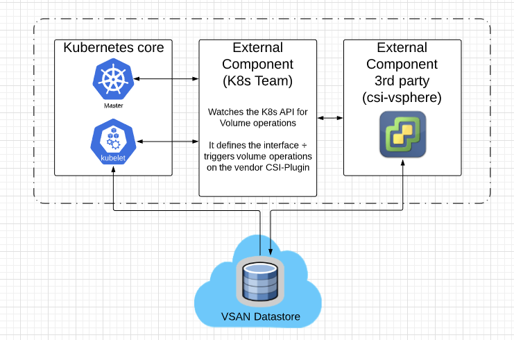
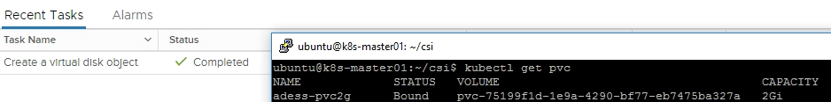

ClusterAPI is a project focussing on the lifecycle management day0 to day2 in order to ease the management for K8s Clusters. The project explains itself with:
The Cluster API is a Kubernetes project to bring declarative, Kubernetes-style APIs to cluster creation, configuration, and management.
In order to leverage all the functionality please make sure you´re using the latest version.
The drawing below is a logical drawing regarding the neccessary components and high-level interaction between those.

In this tutorial we will leverage the csi-vsphere which enables the provisioning of those static values on demand. For the current K8s version the CSI-Plugin is the preferred way to be leveraged.
We´re going to clone the vSphere CSI-Driver plugin to your nodes. You can clone this to all of them or distribute via scp
git clone https://github.com/kubernetes-sigs/vsphere-csi-driver.git
If you followed my previous post you have most likely already enabled this setting. If you haven´t please enable the disk.enableUUID=1
govc vm.change -vm k8s-master01 -e "disk.enableUUID=1"
govc vm.change -vm k8s-worker01 -e "disk.enableUUID=1"
govc vm.change -vm k8s-worker02 -e "disk.enableUUID=1"
There are two options how to provide the csi-vsphere our vCenter Credentials.
In our case we will provide the secrets in the vsphere.conf since we´re working in our lab-environment. For a real environment we would for sure store the credentials in a K8s secret.
My vsphere.conf:
[Global]
user = "cloudadmin@vmc.local"
password = "Highlysecure-XXXX-"
port = "443"
insecure-flag = "1"
[VirtualCenter "10.56.224.4"]
datacenters = "SDDC-Datacenter"
[Workspace]
server = "10.56.224.4"
datacenter = "SDDC-Datacenter"
default-datastore = "WorkloadDatastore"
resourcepool-path = "SDDC-Datacenter/host/Cluster-1/Resources/Compute-ResourcePool"
folder = "adess"
Create configmap:
Next we need to create the neccessary rbac roles
ubuntu@k8s-master01:~/vsphere-csi-driver$ kubectl create -f manifests/1.14/rbac
serviceaccount/vsphere-csi-attacher created
clusterrole.rbac.authorization.k8s.io/external-attacher-runner created
clusterrolebinding.rbac.authorization.k8s.io/csi-attacher-role created
serviceaccount/vsphere-csi-provisioner created
clusterrole.rbac.authorization.k8s.io/external-provisioner-runner created
clusterrolebinding.rbac.authorization.k8s.io/csi-provisioner-role created
serviceaccount/vsphere-csi-controller created
clusterrole.rbac.authorization.k8s.io/vsphere-csi-controller-role created
clusterrolebinding.rbac.authorization.k8s.io/vsphere-csi-controller-binding created
Deploy from the git-repo. It´s mandatory to have the cluster setup with kubeadm in order to properly work:
kubectl create -f manifests/1.14/deploy
statefulset.apps/vsphere-csi-attacher created
statefulset.apps/vsphere-csi-controller created
[csidriver.storage.k8s.io/vsphere.csi.vmware.com](http://csidriver.storage.k8s.io/vsphere.csi.vmware.com) created
daemonset.apps/vsphere-csi-node created
statefulset.apps/vsphere-csi-provisioner created
Adjust the values according to your deployment. For the deployment on VMC it is absolutely mandatory that we´re selecting the Workload-Datastore
ubuntu@k8s-master01:~/csi$ cat sc.yaml
kind: StorageClass
apiVersion: storage.k8s.io/v1
metadata:
name: vsan
namespace: kube-system
annotations:
storageclass.kubernetes.io/is-default-class: "true"
provisioner: vsphere.csi.vmware.com
parameters:
parent_type: "Datastore"
parent_name: "DatastoreWorkloadDatastore"
# Apply to create our Storage-Class:
kubectl apply -f sc.yaml
After creating a storage-class into the K8s-API we can now create a persistent Volume Claim
cat pvc.yaml:
apiVersion: v1
kind: PersistentVolumeClaim
metadata:
name: adess-pvc
spec:
accessModes:
- ReadWriteOnce
resources:
requests:
storage: 5Gi
storageClassName: vsan
Lets check if our volume was created accordingly. If you get the status “Bound” it has been successfully created. At the same time you should see a vmdk created in vCenter. 
ubuntu@k8s-master01:~/csi$ kubectl get pvc
NAME STATUS VOLUME CAPACITY ACCESS MODES STORAGECLASS AGE
adess-pvc2g Bound pvc-75199f1d-1e9a-4290-bf77-eb7475ba327a 2Gi RWO vsan 5s
That´s it - stay tuned. In the next post we will leverage this to deploy a stateful Kubernetes application!